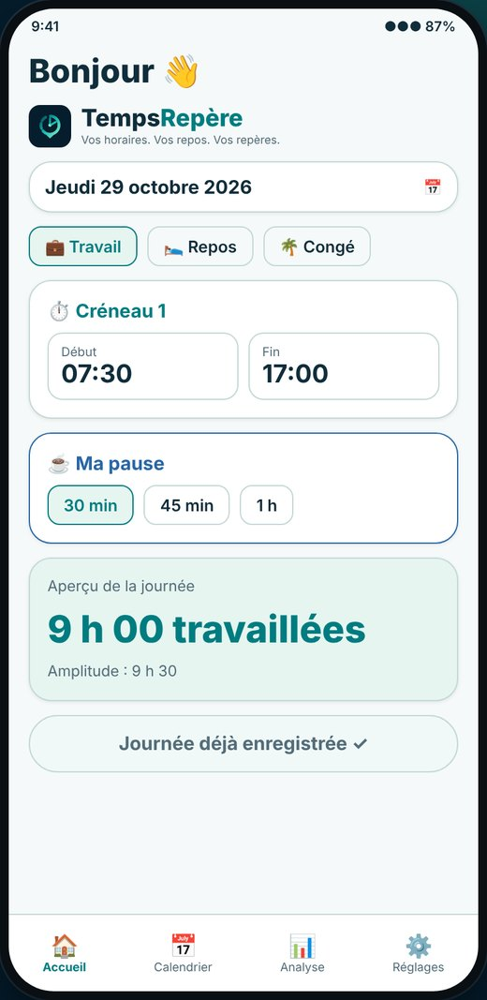
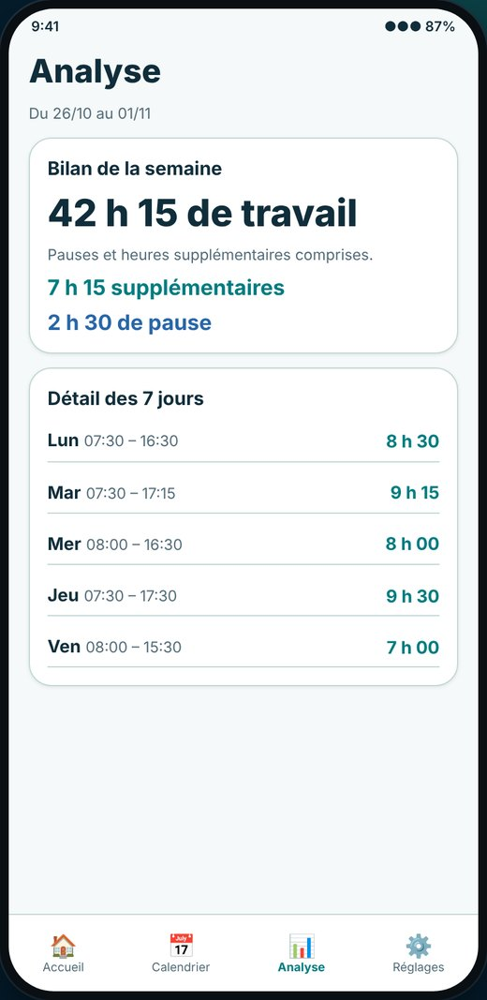
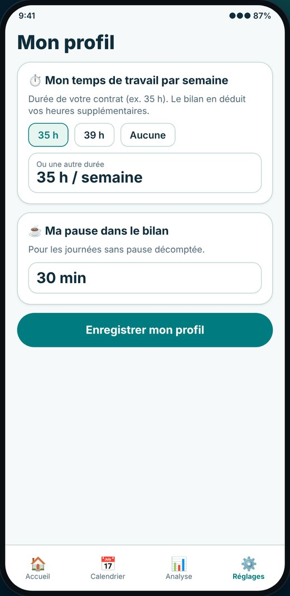
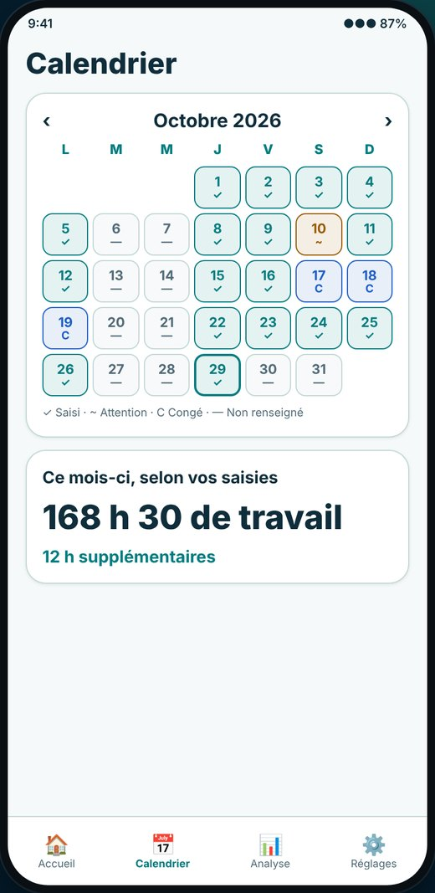
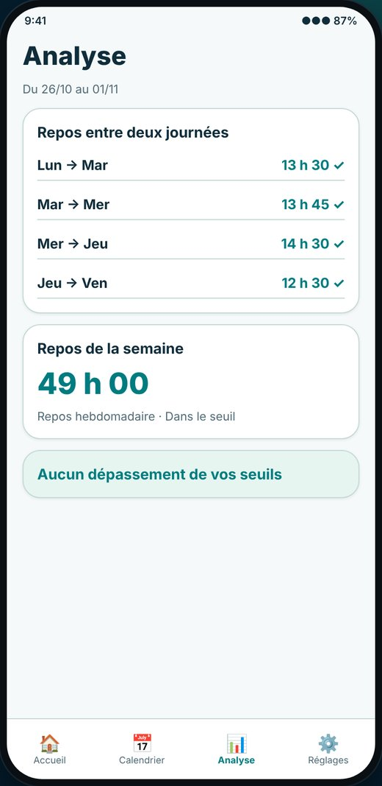
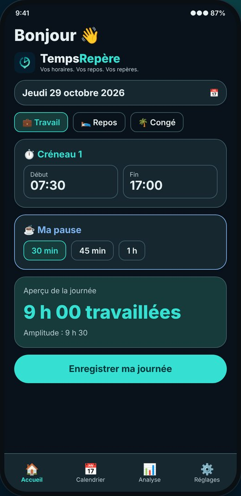

Votre journée, en un coup d'œil
Début, fin, pause, repas, note. Plusieurs créneaux dans la même journée, fin le lendemain pour le travail de nuit, journée de repos ou jour de congé.
TempsRepère est l'application gratuite pour noter votre journée en 30 secondes et suivre vos pauses, vos repos et vos heures supplémentaires.

L'application s'ouvre directement sur la saisie du jour. Le reste est à un toucher.
Début, fin, pause, repas, note. Plusieurs créneaux dans la même journée, fin le lendemain pour le travail de nuit, journée de repos ou jour de congé.
Indiquez votre durée hebdomadaire (35 h, 39 h ou autre) : le bilan calcule vos heures supplémentaires semaine par semaine, avec le total, les pauses et les congés.
Repos entre deux journées et repos de la semaine, avec des seuils que vous réglez vous-même dans votre profil.
Un mois en couleurs, le détail de vos 7 jours, l'historique par mois et un rapport PDF à garder ou à partager.
Pas de compte, pas de serveur : tout est enregistré sur votre téléphone, avec une sauvegarde en fichier que vous gardez où vous voulez.
L'application suit le réglage de votre téléphone, ou vous choisissez Clair ou Sombre dans les réglages.
Aperçus avec des données fictives.





Les écrans peuvent évoluer légèrement d'une version à l'autre.
Oui. L'application est gratuite et sans publicité.
Sur Android, via Google Play. Il n'y a pas de version iPhone pour l'instant.
Nulle part : elles restent sur votre téléphone. Il n'y a ni compte ni serveur. Vous pouvez les sauvegarder dans un fichier depuis les réglages. Le détail est dans la politique de confidentialité.
Non. TempsRepère est un outil d'aide au suivi de vos horaires. Il ne remplace ni votre employeur ni un avis juridique.
Bientôt sur Google Play. Cette page sera mise à jour avec le lien dès la sortie.